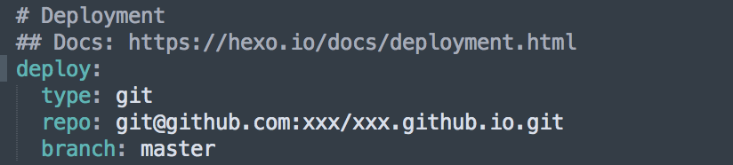

Hexo blog framewrok
Aug 20, 2018 5:00·132 words ·1 minutes read
I have been thinking for a while to create my own personal tech blog to record my tech studies. And I came accross Hexo, a simple blog framework for us to create our own blogs. It’s super helpful for non front-end developers. Here are the steps you can follow.
Steps
Download node.js
Here I use node-v5.6.0
Install Hexo and packages
Screen Shot 2018-08-20 at 5.34.24 PM
$ npm install -g hexo
$ hexo init
$ npm install
You will be able to view the default blog generated by hexo locally after type in,
$ hexo g
$ hexo s
Deploy code to github
You need to create a github repository following the naming pattern: “youname.github.io”, then edit the _config.yml file in the root path.
